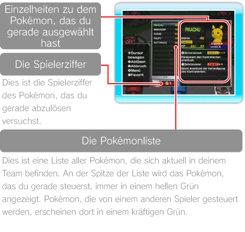
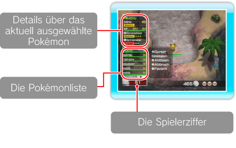
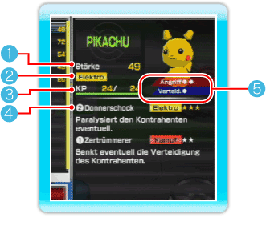
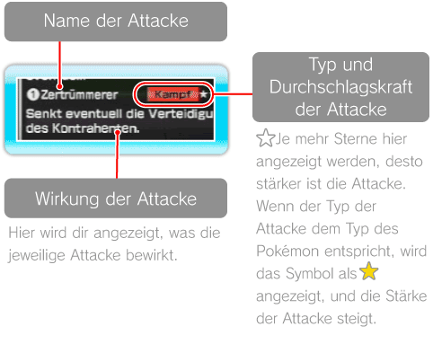
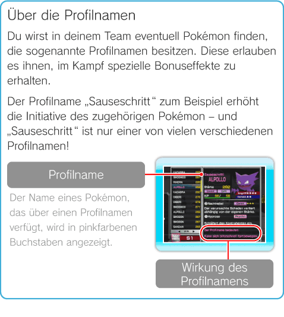
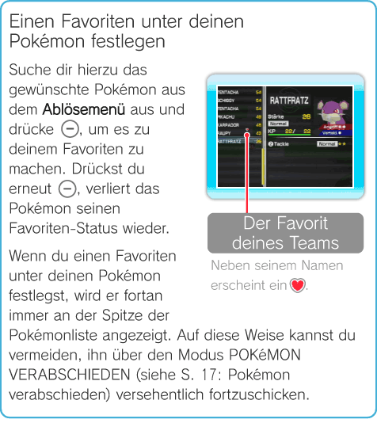

11 |
Das Ablösemenü |
 |
|
Ein Überblick über das Ablösemenü Mit Je nachdem, wo du dich gerade aufhältst, kann das Ablösemenü allerdings unterschiedliche Informationen beinhalten. Weitere Informationen über das Ablösen von Pokémon kannst du außerdem den Einträgen zu den Stichwörtern Terminal (S. 12), Stufen (S. 13) und Battle Royale (S. 14) entnehmen. Wenn die Zahl der Pokémon, die du auf deiner Wii-Konsole gespeichert hast, 1 000 überschreitet, musst du ein oder mehr POKéMON VERABSCHIEDEN (siehe S. 17: Pokémon verabschieden).
Der Aufbau des Ablösemenüs, während du dich im Terminal aufhältst  Der Aufbau des Ablösemenüs, wenn du dich in Stufen aufhältst oder am Battle Royale teilnimmst  Der Aufbau des Pokémon-Statusfeldes
 Hinweis: Dieses Bild zeigt den Aufbau des Feldes im Terminal an.
Stärke Hieran kannst du den umfassenden Stärke-Wert des jeweiligen Pokémon ablesen.
Pokémon-Typ Hier wird dir angezeigt, welchem Typ das jeweilige Pokémon entspricht (zum Beispiel ). Es gibt viele verschiedene Typen von Pokémon. Manche Pokémon werden auch zwei Typen gleichzeitig zugeordnet.
KP (Kraftpunkte) Hier wird dir angezeigt, über wie viele Kraftreserven dein Pokémon aktuell bzw. maximal verfügt. Wird deinem Pokémon Schaden zugefügt, nimmt die erste hier angezeigte Zahl ab. Erreicht sie schließlich den Wert 0, wird das Pokémon bewusstlos und du kannst nicht mehr mit ihm weiterspielen.
Hinweis: Kehrst du ins Terminal zurück, werden die KP deiner Pokémon automatisch vollständig regeneriert.
Informationen zu den Attacken Hier werden dir Details zu den Attacken angezeigt, über die dein Pokémon verfügt. Jedes Pokémon kann maximal zwei Attacken gleichzeitig erlernen. Die Attacken sind den beiden Knöpfen ( Es gibt auch Pokémon, die nur über eine einzige Attacke verfügen. Wenn du gerade ein solches Pokémon steuerst und dann einen Knopf betätigst, dem aktuell keine Attacke zugewiesen ist, schaut das Pokémon in deine Richtung. Die Pokémon in diesem Spiel können keine Level aufsteigen oder während eines Kampfes neue Attacken dazulernen. Wenn du einem Mitglied deines Teams eine neue Attacke beibringen möchtest, kannst du dafür die Einrichtung ATTACKE DAZULERNEN (siehe S. 12: Wie man die Terminaleinrichtungen richtig einsetzt) im Terminal verwenden.  Angriff / Verteidigung An dieser Anzeige kannst du die Angriffskraft (Angriff) und den Verteidigungswert (Verteidigung) des jeweiligen Pokémon ablesen. Je mehr ○ du hier siehst, desto höher ist seine Angriffskraft bzw. sein Verteidigungswert.
Hinweis: Diese Anzeige entfällt, wenn du dich gerade in einer Stufe aufhältst oder am Battle Royale teilnimmst.

Pokémon KATEGORISIEREN / SORTIEREN Wenn du im Terminal das Ablösemenü öffnest und dann auf
Hinweis: Diese Optionen stehen dir nicht zur Verfügung, wenn du gerade in einer Stufe unterwegs bist oder am Battle Royale teilnimmst.
 |
 lässt sich das Ablösemenü öffnen, wo du Einsicht in eine Liste all jener Pokémon erhältst, mit denen du deine aktuelle Spielfigur ablösen kannst. Du findest dort auch allerlei Informationen zu den Pokémon in deinem Team, wie beispielsweise ihre Stärke.
lässt sich das Ablösemenü öffnen, wo du Einsicht in eine Liste all jener Pokémon erhältst, mit denen du deine aktuelle Spielfigur ablösen kannst. Du findest dort auch allerlei Informationen zu den Pokémon in deinem Team, wie beispielsweise ihre Stärke. bzw.
bzw.  ) zugeteilt, die jeweils links neben dem Namen der Attacke angezeigt werden.
) zugeteilt, die jeweils links neben dem Namen der Attacke angezeigt werden. drückst, erhältst du Zugriff auf die folgenden drei Optionen:
drückst, erhältst du Zugriff auf die folgenden drei Optionen: |
 |
 |